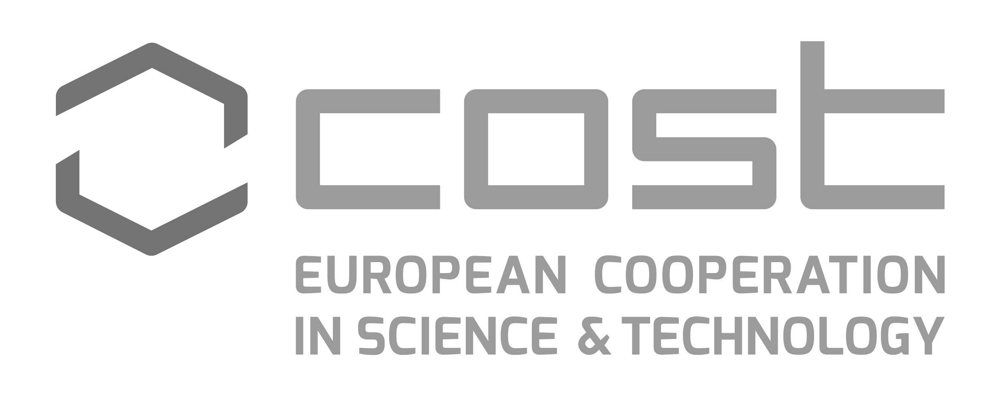

<!doctype html>
<html lang="en">
<head>
<meta charset="utf-8">
<!-- CUSTOMIZE THIS! -->
<title>Distant Reading</title>
<meta name="author" content="Christof Schöch">
<!-- END -->
<meta name="description" content="Slides">
<meta name="apple-mobile-web-app-capable" content="yes">
<meta name="apple-mobile-web-app-status-bar-style" content="black-translucent">
<meta name="viewport" content="width=device-width, initial-scale=1.0, maximum-scale=1.0, user-scalable=no, minimal-ui">
<link rel="stylesheet" href="css/reveal.css">
<link rel="stylesheet" href="css/theme/simple.css" id="theme">
<!-- Code syntax highlighting -->
<link rel="stylesheet" href="lib/css/zenburn.css">
<!-- Printing and PDF exports -->
<script>
var link = document.createElement( 'link' );
link.rel = 'stylesheet';
link.type = 'text/css';
link.href = window.location.search.match( /print-pdf/gi ) ? 'css/print/pdf.css' : 'css/print/paper.css';
document.getElementsByTagName( 'head' )[0].appendChild( link );
</script>
<!--[if lt IE 9]>
<script src="lib/js/html5shiv.js"></script>
<![endif]-->
</head>


<body>
<div class="reveal">
<div class="slides">
<section data-markdown="" data-separator="^\n---\n" data-separator-vertical="^\n--\n" data-charset="utf-8" data-background-image="img/distant-reading_icon.png" data-background-size="100px" data-background-position="top right">
<script type="text/template">

## Management Committee Meeting
<hr/>
<br/>
### COST Action CA16204
### *Distant Reading for European Literary History*
####Lisbon, Portugal | Jan 21, 2019
<br/>
<br/>
<hr/>

<br/>

---
## **Agenda overview**
<br/>
1. [Welcome to participants](#/2)
2. [Verification of the quorum](#/3)
3. [Adoption of the agenda](#/4)
4. [Approval of minutes](#/5)
5. [Updates from the Core Group](#/6)
6. [Reports from the working groups](#/7)
7. [Action Planning for GP3](#/8)
8. [Any other business](#/9)
9. [Closing](#/10)


---
## **1. Welcome to participants**
<small>[**^**](#/1)</small>


--
## Reminder: Meeting Schedule
<small>[**^**](#/1)</small>

|Day|Time|Event|
|-----|------------:|-------------------|
| Mon | 15:00-17:00 |  MC Meeting       |
|     | 17:30-18:30 | WG kick-offs      |
| Tue |  9:00-15:30 | WG Meetings       |
|     | 16:00-17:00 | Joint Session     |
|     | 17:15-18:30 | TXM setup session |
|     |       20:00 | Joint Dinner      |
| Wed |  9:00-13:30 | TXM Workshop      |

See: https://www.distant-reading.net/events/lisbon-meeting-2019/

---
## **2. Verification of the quorum**
<small>[**^**](#/1)</small>
<br/><br/>See: https://www.cost.eu/actions/CA16204/#tabs|Name:parties


---
## **3. Adoption of the Agenda**
<small>[**^**](#/1)</small>


---
## **4. Approval of minutes**
<small>[**^**](#/1)</small>


---
## **5. Updates from the Core Group**
<small>[**^**](#/1)</small>

--
## New Participants in 2018
<small>[**^**](#/1)</small>
* Additional countries <!-- .element: class="fragment" data-fragment-index="1" -->
    * fyr Macedonia (February 2018)
    * Austria (May 2018)
    * Lithuania (May 2018)
    * Denmark (June 2018)
* International Partner Countries <!-- .element: class="fragment" data-fragment-index="2" -->
    * USA (New York University)
    * Australia (Newcastle University)

--
## STSMs
<small>[**^**](#/1)</small>
* STSMs conducted so far
* STSMs already approved
* Will there be more STSMs in GP2?

--
## Action monitoring
<small>[**^**](#/1)</small>
* "First Progress Report" (Nov. 2018)
* Regarding gender balance, ECIs and ITCs
* Very significant progress since initial SC Recommendations
* Second report (month 24): focused on scholary work

--
## Action budget status
<small>[**^**](#/1)</small>
* GP2: Amendment and current situation
* MC Decision: remaining funds
* GP3: 144k have been approved


---
## **6. Reports from the Working Groups**
<small>[**^**](#/1)</small>

--
## WG1: Resources
<small>[**^**](#/1)</small>
* ELTeC: progress
* ELTeC: selection criteria

--
## WG2: Methods and Tools
<small>[**^**](#/1)</small>
* ELTeC: annotations
* Galway Training School

--
## WG3: Literary History and Theory
<small>[**^**](#/1)</small>
* Galway Training School 
* Paper on definitions of the novel

--
## WG4: Dissemination
<small>[**^**](#/1)</small>
* Development of the website
* The 2018 Poster Tour
* ...


---
## **7. Action Planning for GP3**
<small>[**^**](#/1)</small>

--
## Grant Period 3
<small>[**^**](#/1)</small>
* May 2019 to April 2020
* Phase of further development in all WGs
* A large Training School (WGs 1, 2, 3)

--
## GP Goals
<small>[**^**](#/1)</small>
* to be discussed

--
## Events in GP3
<small>[**^**](#/1)</small>
* Joint WG 1 + 2 Meeting:<br/>June/July 2019
* Joint TS (WG 1,2,3) + WG3 Meeting:<br/>Budapest, Sept. 2019 
* Joint CG + MC + MG Meeting:<br/>Málaga, Feb. 2020

--
## Grant Period Budget
<small>[**^**](#/1)</small>

| Type                        |       Expense |
|-----------------------------|--------------:|
| (tbd) WG 1 + 2 meeting      |      24.000 € |
| Budapest TS and WG 3 meeting|      33.400 € |
| Málaga CG + MC + WG meeting |      41.600 € |
| STSMs + Conf. Grants        |      25.600 € |
| Dissemination               |         600 € |
| **Subtotal**                | **125.200 €** |
| FSAC (15%)                  |      18.780 € |
| **Total**                   | **143.980 €** |

--
## Budget breakdown
<small>[**^**](#/1)</small>

| Type                   |  % GP3  | % typical |
|------------------------|--------:|----------:|
| Meetings               |    60 % |      65 % |
| Training Schools       |    19 % |      15 % |
| STSMs and Conf. Grants |    20 % |      17 % |
| Dissemination          |     1 % |       3 % |


---
## **8. Any other business**
<small>[**^**](#/1)</small>

--
## Practical things
<small>[**^**](#/1)</small>
* Remarks on Travel Reimbursement
* Dinner on Tuesday: [Restaurant Laurentina](https://www.restaurantelaurentina.com/) | [Map](https://goo.gl/maps/kTBL25PpT9D2)


---
## **9. Closing**
<small>[**^**](#/1)</small>
<br/>
<br/>
#Thank you all!


---
<br/>
<br/>
<br/>
<br/>
<br/>Distant Reading, 2019
<br/>http://www.distant-reading.net
<br/>
<br/>
<hr/>
<br/>
Licence: [Creative Commons Attribution 4.0](https://creativecommons.org/licenses/by/4.0/)
<br/>

</script>

<!-- DON'T TOUCH UNLESS YOU KNOW WHAT YOU'RE DOING :-) -->
</div>
<script src="lib/js/head.min.js"></script>
<script src="js/reveal.js"></script>
<script>
// Full list of configuration options available at:
// https://github.com/hakimel/reveal.js#configuration
Reveal.initialize({
    controls: true,
    progress: true,
    history: true,
    center: true,
    transition: 'slide', // none/fade/slide/convex/concave/zoom
    // Optional reveal.js plugins
    dependencies: [
        { src: 'lib/js/classList.js', condition: function() { return !document.body.classList; } },
        { src: 'plugin/markdown/marked.js', condition: function() { return !!document.querySelector( '[data-markdown]' ); } },
        { src: 'plugin/markdown/markdown.js', condition: function() { return !!document.querySelector( '[data-markdown]' ); } },
        { src: 'plugin/highlight/highlight.js', async: true, callback: function() { hljs.initHighlightingOnLoad(); } },
        { src: 'plugin/zoom-js/zoom.js', async: true },
        { src: 'plugin/notes/notes.js', async: true }
        ]
    });
Reveal.configure({ slideNumber: true });
</script>
</body>
</html>
